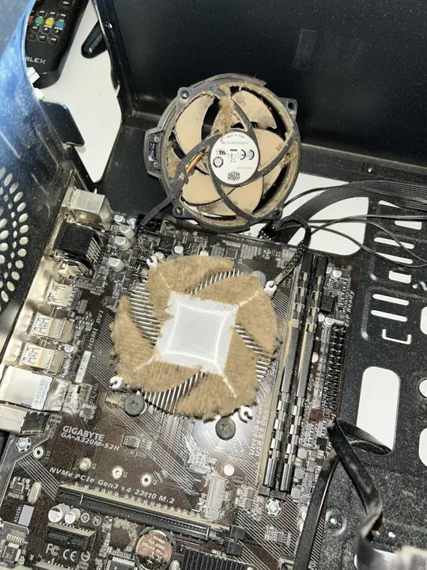
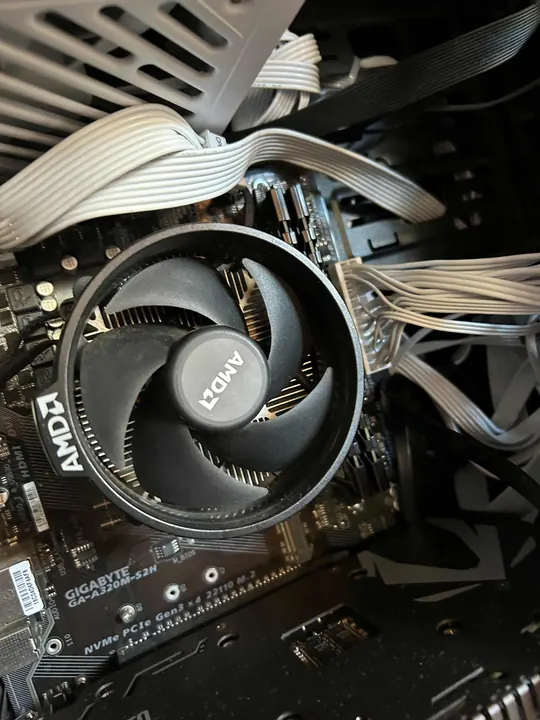
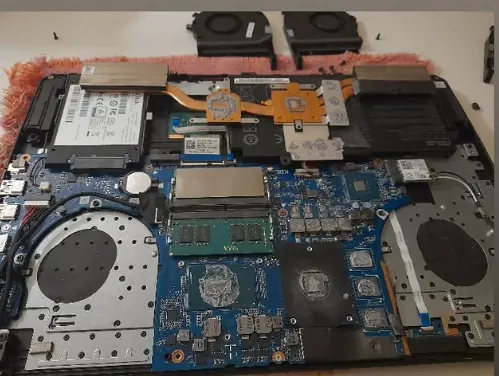
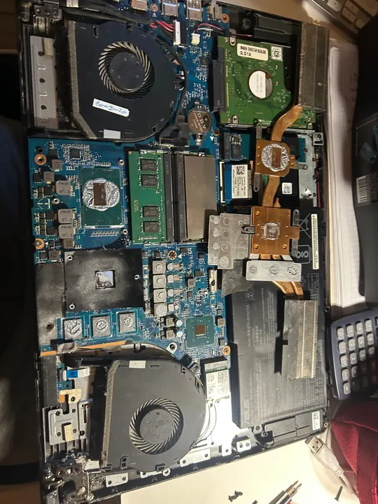
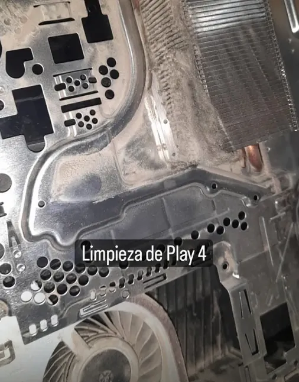
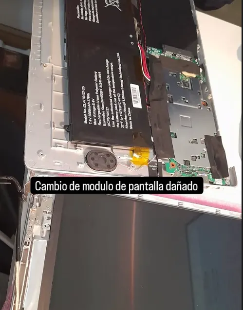
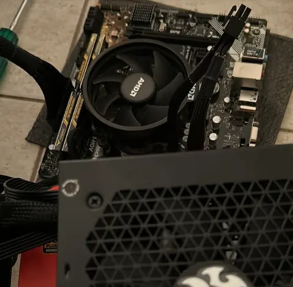
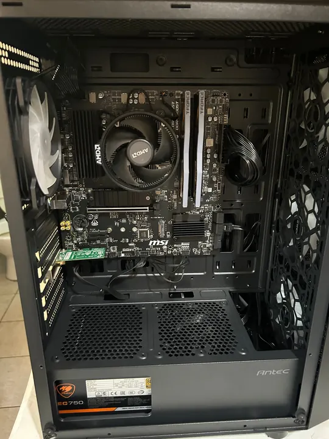
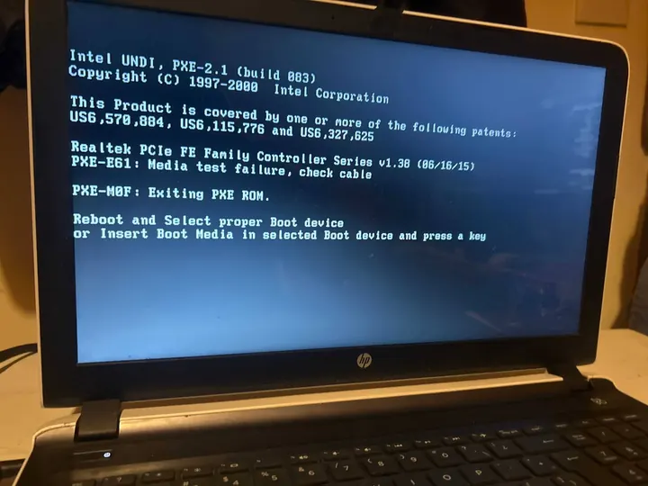

Servicio técnico en Recoleta, Capital Federal
Tu equipo,bien resuelto.
Diagnóstico claro, mantenimiento cuidadoso y upgrades que realmente mejoran tu PC o notebook. Sin vueltas ni gastos innecesarios.
- Presupuesto claro
- Trabajo documentado
- Retiro y entrega
Servicios
Lo que puedo hacerpor tu equipo
Desde una PC lenta hasta una actualización completa: primero encuentro la causa, después te explico las opciones.
Diagnóstico completo
Pruebas de hardware, temperaturas, discos y sistema. Recibís una explicación clara y un presupuesto antes de avanzar.
Limpieza y refrigeración
Limpieza interna, cambio de pasta térmica y revisión del flujo de aire para cuidar rendimiento y vida útil.
Upgrades con criterio
SSD, memoria y componentes elegidos según tu uso y presupuesto. Migración y clonación incluidas cuando corresponde.
Formateo y sistemas
Instalación y configuración de Windows o Linux, drivers, actualizaciones y puesta a punto segura.
Reparación de componentes
Diagnóstico de placa, conectores y piezas dañadas. Te digo con honestidad cuándo conviene reparar y cuándo reemplazar.
Soporte remoto
Asistencia a distancia para problemas de software, configuración y asesoramiento de seguridad.
Optimizador de SistemaPfoHardware
Un programa para Windows diseñado para mejorar la fluidez y el rendimiento de tu PC con un solo clic, sin conocimientos técnicos. Al aprobarse el pago recibís tu clave y el enlace de descarga en pantalla y por mail.
Optimización completa
Deja toda la PC más liviana: arranca más rápido, con menos programas y permisos en segundo plano, y rinde más en juegos.
Solo juegos
Para jugar: además ajusta tu placa de video NVIDIA o Intel a máximo rendimiento, sin tocar tus programas de inicio ni tu privacidad.
- Windows 10 u 11 (64 bits)
- Intel o AMD, cualquier procesador
- 2 GB de RAM o más
- Pide permiso de administrador
$10.000 ARS
Pago único con Mercado Pago, sin suscripciones.
Comprar y descargarCompra y licencia: pago único con Mercado Pago, sin suscripciones. La licencia es para 1 computadora con Windows 10 u 11. Tenés 10 días corridos para arrepentirte de la compra (Ley 24.240); si pedís la devolución, la licencia se desactiva. Ante cualquier duda o problema, contás con mi soporte directo y personal.
Botón de arrepentimiento
Seguro y reversible
Antes de optimizar guarda tu configuración y, si el equipo lo permite, crea un punto de restauración de Windows: con Deshacer cambios volvés todo a como estaba. Nunca vacía la Papelera sin preguntarte ni desactiva tu antivirus, el firewall o las actualizaciones.
Soporte directo y personal
Ante cualquier duda o problema, te atiendo yo mismo de forma directa y te ayudo a resolverlo.
Actualizaciones continuas
Sigo trabajando en mejoras: si encuentro nuevas formas de optimizar tu computadora, actualizo el programa, y él mismo te avisa cuando hay una versión nueva.
Compra transparente
Pagás una sola vez. Tu clave te llega por mail, queda vinculada a tu computadora y la recuperás cuando quieras con tu número de operación.
“Mi intención es mejorar la velocidad y fluidez de tu computadora porque entiendo esa molestia. Este optimizador lo creé y utilicé personalmente en mis propios equipos con excelentes resultados; funcionó tan bien que decidí ponerlo a disposición de todos. Tenés mi compromiso de soporte directo y continuo.”
¿Cómo lo instalo?
- Descargá el archivo. Al aprobarse el pago vas a ver tu clave y el botón de descarga, y también te llegan por mail. Descomprimí el
.zipy abrí el.exe. - Aceptá el permiso de administrador que te pide el programa.
- Ingresá tu clave, tocá Optimizar ahora y listo. Si querés volver atrás, usá Deshacer cambios.
Windows muestra “Windows protegió su PC”. ¿Es normal?
Sí. Al tratarse de un desarrollo independiente, Windows SmartScreen puede mostrar esa pantalla azul. Hacé clic en “Más información” y después en “Ejecutar de todas formas”.
El aviso aparece porque el programa todavía no tiene una firma digital comercial. No significa que tenga virus.
¿Funciona en Mac o en Linux?
No. Es exclusivo para Windows 10 y 11 (64 bits).
Trabajos realizados
Trabajos reales,de cerca.


AntesPC antes de la limpieza

DespuésPC después de la limpieza

Mantenimiento de notebook

Revisión interna de notebook

Limpieza de PlayStation 4

Cambio de módulo de pantalla

Armado de PC

Mantenimiento de computadora

Diagnóstico de arranque en notebookMétodo de trabajo
De la fallaa la solución.
- Paso 1
Revisión
Escucho qué pasa y reviso el equipo con pruebas concretas.
- Paso 2
Propuesta
Te explico el problema, las alternativas y el costo total.
- Paso 3
Resolución
Hago el trabajo acordado y verifico estabilidad y rendimiento.
- Paso 4
Entrega
Recibís el equipo probado, limpio y con recomendaciones de uso.
Hablemos de tu equipo
¿Algo no funcionacomo debería?
Contame qué está pasando. Coordinamos una revisión, retiro y entrega o asistencia según tu caso.